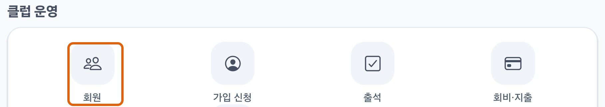
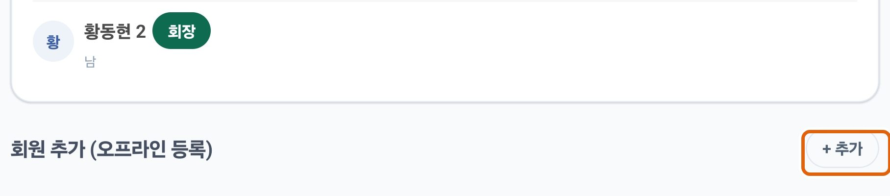
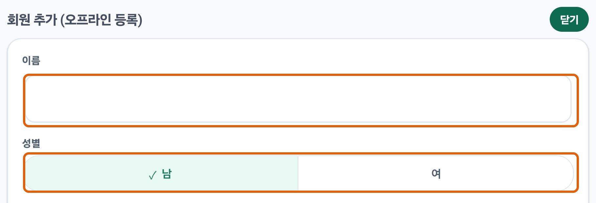
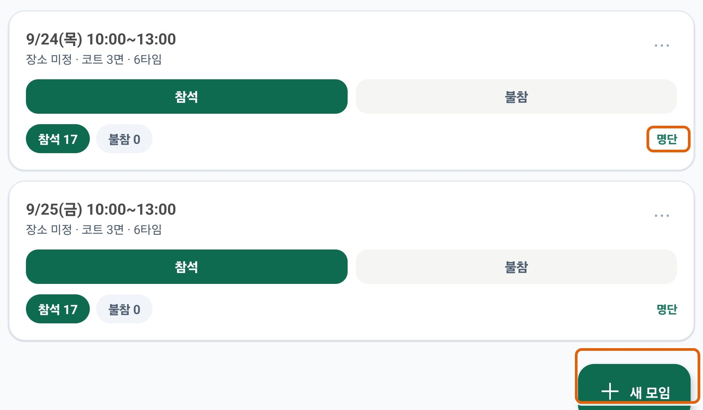
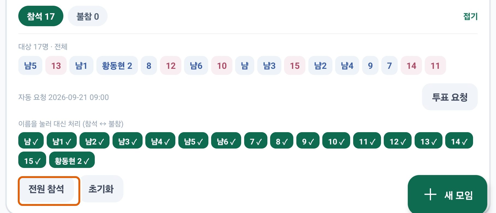
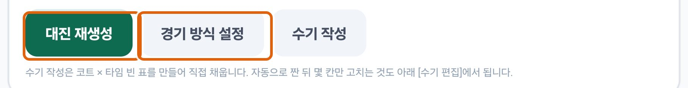
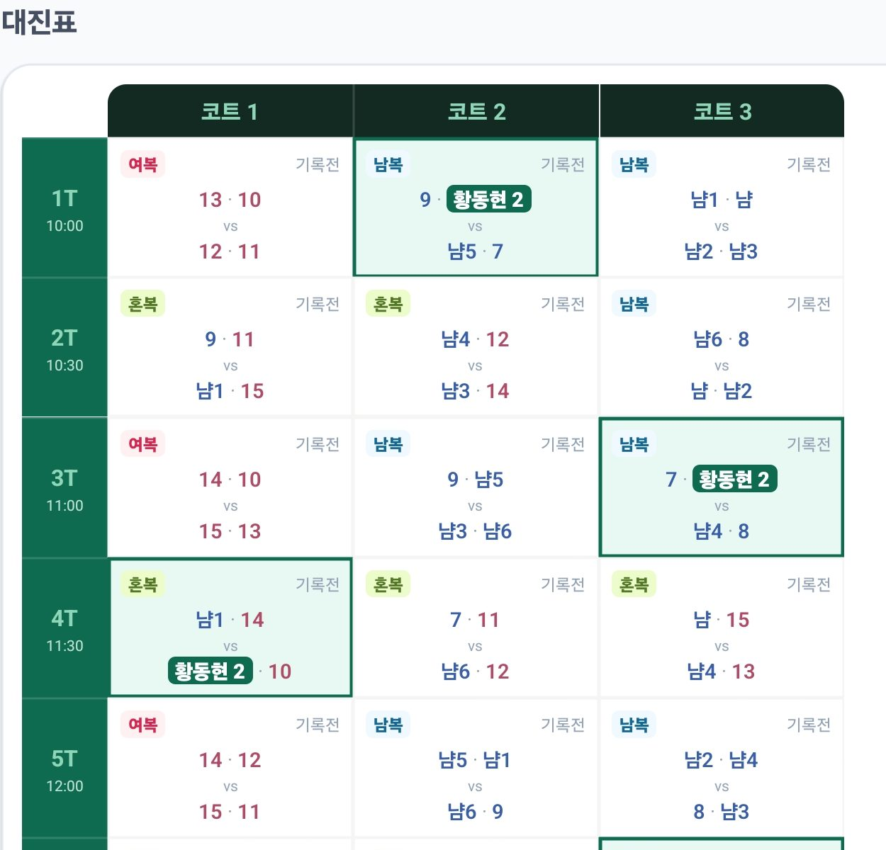
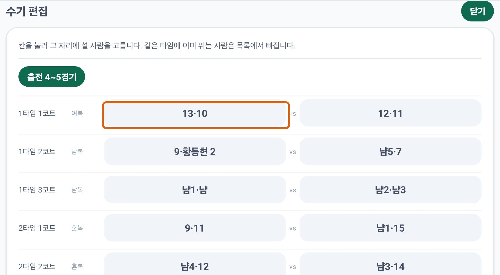

01
회원가입
앱 첫 화면
이메일 주소를 넣고 비밀번호를 정한 뒤 약관에 동의하면 끝입니다.
인증 메일을 기다릴 필요는 없습니다.
주의 여기서 만드는 계정은 대진을 짜는 사람(나)의 것입니다.
경기에 나오는 사람들은 앱을 깔지도, 가입하지도 않습니다 — 3단계에서 내가 이름만 적어 넣습니다.
이메일·비밀번호만 있으면 됩니다
02
클럽 만들기
클럽 만들기
가입하면 바로 이 화면이 나옵니다. 클럽 이름만 적고
맨 아래 [클럽 만들기 (내가 회장)]를 누르세요.
나머지 칸은 비워 둬도 됩니다.
건너뛸 수 없습니다 일정과 대진은 모두 클럽 안에 들어갑니다.
클럽이 없으면 3단계부터 아예 메뉴가 나오지 않습니다.
임시로 쓰는 것이라면 이름을 행사 이름으로 적어 두는 편이 나중에 찾기 쉽습니다.
이름만 적고 아래 버튼을 누르면 됩니다
03
참석할 사람 넣기
홈→
클럽 운영→
회원→
＋ 추가
홈 화면을 아래로 내리면 클럽 운영이 나옵니다. 여기서 회원을 누르세요.

옆으로 밀기홈 → 클럽 운영 → 회원
회원 목록 맨 아래에 회원 추가 (오프라인 등록)이 있습니다.
오른쪽 ＋ 추가를 누르면 입력 칸이 열립니다.

옆으로 밀기목록 맨 아래 → ＋ 추가
이름과 성별만 채우고 저장하면 됩니다. 한 명씩 반복하세요.

옆으로 밀기이름과 성별만 — 부수·활동 지역·조·시작일·직책은 모두 선택
- 이 사람들은 앱을 설치하지 않습니다. 내가 대신 넣어 주는 명단입니다.
- 성별은 꼭 고르세요 — 남복·여복·혼복을 가르는 기준입니다.
- 이번 행사에 오는 사람만 넣으면 됩니다.
몇 명이 필요한가 복식 한 경기에 4명입니다.
코트를 3면 쓰면 한 타임에 12명이 동시에 뜁니다.
인원이 그보다 적으면 코트가 남고, 많으면 돌아가며 쉽니다 — 둘 다 정상입니다.
04
모임 만들기
일정→
＋ 새 모임
아래 일정 탭으로 가서 오른쪽 아래 ＋ 새 모임을 누릅니다.

옆으로 밀기오른쪽 아래 ＋ 새 모임 · 모임을 만들면 이렇게 목록에 쌓입니다
열린 칸에서 채울 것은 네 가지뿐입니다.
- 날짜 · 시작 시간 · 종료 시간
- 코트 면수 — 빌린 코트가 몇 면인지
- 타임(라운드) 수 — 시간을 넣으면 자동으로 계산됩니다
10:00~13:00 · 코트 3면 · 6타임 → 한 타임에 12명
타임이 뭔가요 코트를 한 번 다 채워 도는 것이 1타임입니다.
한 경기를 30분씩 한다면 10시~13시는 6타임입니다.
시작·종료 시간을 넣으면 앱이 계산해 주니, 숫자가 이상하면 시간을 고치세요.
코트장 칸은 비워 둬도 됩니다.
05
전원 참석 처리
일정→
명단→
전원 참석
모임 카드 오른쪽 아래 [명단]을 누르면 참석자 명단이 펼쳐집니다.
거기서 [전원 참석]을 한 번 누르면 등록한 사람이 모두 참석으로 바뀝니다.

옆으로 밀기전원 참석 한 번이면 끝 · 한 명만 빼려면 위 이름을 눌러 참석↔불참을 바꿉니다
이 단계를 빼먹으면 대진이 안 나옵니다. 대진표는 참석으로 표시된 사람만 가지고 짭니다.
명단에 이름이 있어도 참석 표시가 없으면 아무도 없는 것과 같습니다.
못 오게 된 사람은 이름을 눌러 불참으로 바꾸면 됩니다.
06
대진표 뽑기
대진→
자동 대진 생성
아래 대진 탭으로 갑니다. 위쪽 날짜 줄에서 방금 만든 모임이 선택돼 있는지 보고,
[자동 대진 생성]을 누르면 표가 한 번에 만들어집니다.
이미 대진이 있으면 같은 자리 버튼이 [대진 재생성]으로 바뀝니다 — 누를 때마다 다른 조합이 나옵니다.

옆으로 밀기대진 재생성으로 짜고, 경기 방식 설정에서 방식을 고릅니다
- 경기 방식 설정 — 타임마다 혼복으로 할지, 남복·여복으로 할지, 번갈아 갈지
- 수기 작성 — 빈 표를 만들어 처음부터 직접 채우고 싶을 때
만들어진 표는 타임 × 코트로 한눈에 보입니다.

옆으로 밀기칸마다 경기 종류(여복·남복·혼복)와 두 팀 · 초록은 내가 뛰는 경기
인원이 안 맞으면 앱이 먼저 물어봅니다 — 남녀 수가 맞지 않아 혼복이 안 될 때
잡복(남녀 구분 없이)을 허용할지, 아니면 코트를 덜 쓸지 고르게 합니다.
취소하고 사람을 더 넣어도 되고, 그냥 허용해도 됩니다.
07
손으로 고치기 · 필요할 때만
대진→
수기 편집→
저장하기
자동으로 짠 표도 몇 칸만 손볼 수 있습니다.
대진표 아래로 내리면 수기 편집이 있습니다. [열기]를 누르세요.
옆으로 밀기대진표 아래 → 열기
칸을 누르면 그 자리에 설 사람을 고르는 창이 뜹니다.

옆으로 밀기바꾸고 싶은 칸을 누릅니다 · 위 「출전 4~5경기」는 사람별 경기 수 편차
- 같은 타임에 이미 뛰는 사람은 목록에서 자동으로 빠집니다.
- 이름 옆 숫자는 그 사람이 지금까지 몇 경기 뛰는지입니다 — 이걸 보고 균형을 맞추세요.
- 다 고쳤으면 목록 맨 아래의 [저장하기]를 누릅니다.
반드시 [저장하기]를 누르세요. 고치는 동안에는 아직 반영되지 않습니다.
저장하지 않고 나가려 하면 앱이 한 번 물어보고, 거기서 [저장 안 함]을 고르면
고치기 전 대진으로 돌아갑니다.
다 고쳤는데 표가 그대로라면 십중팔구 저장을 안 누른 것입니다.
안 될 때
- 대진 생성을 눌러도 아무 일이 없어요
- 5단계의 [전원 참석]을 안 누른 경우가 대부분입니다. 참석으로 표시된 사람이 4명보다 적으면 복식 한 경기도 만들 수 없습니다.
- "잡복을 허용하시겠습니까?"가 떠요
- 남녀 인원이 맞지 않아 남복·여복·혼복만으로는 코트를 못 채운다는 뜻입니다. 허용하면 남녀 구분 없이 짜고, 취소하면 사람을 더 넣거나 코트 면수를 줄이면 됩니다.
- 클럽 운영 메뉴가 안 보여요
- 클럽을 만든 사람에게만 보입니다. 2단계를 건너뛰었거나, 남이 만든 클럽에 회원으로 들어간 경우입니다.
- 타임 수가 이상해요
- 시작·종료 시간에서 계산된 값입니다. 시간을 고치면 따라 바뀌고, 숫자를 직접 고쳐 넣어도 됩니다.
- 고친 대진이 사라졌어요
- [저장하기]를 누르지 않고 나간 것입니다. 나갈 때 뜬 경고창에서 [저장하고 나가기]를 고르면 지킬 수 있습니다.
- 코트 이름이 "코트 1, 2, 3"으로 나와요
- 실제 코트 번호가 다르다면(예: 9·10·11번) 더보기 → 코트장 관리에서 코트 이름을 직접 정할 수 있습니다. 임시로 쓰는 것이라면 그냥 두셔도 됩니다.